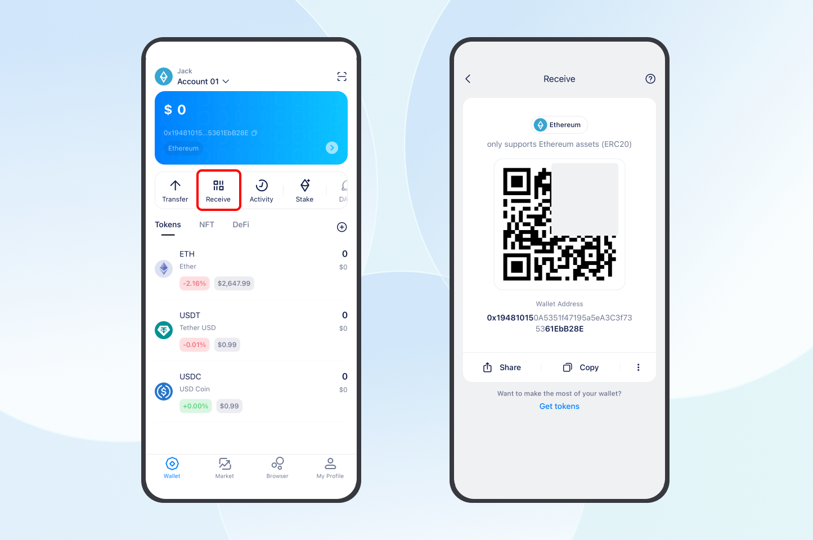
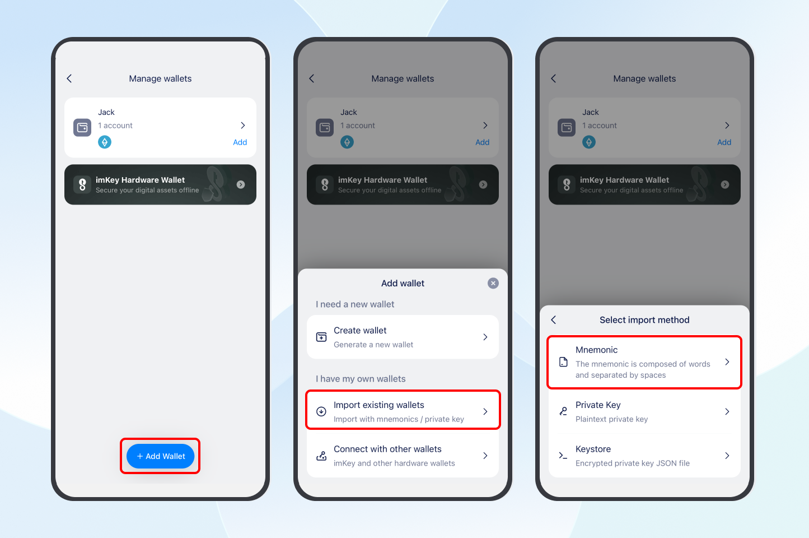
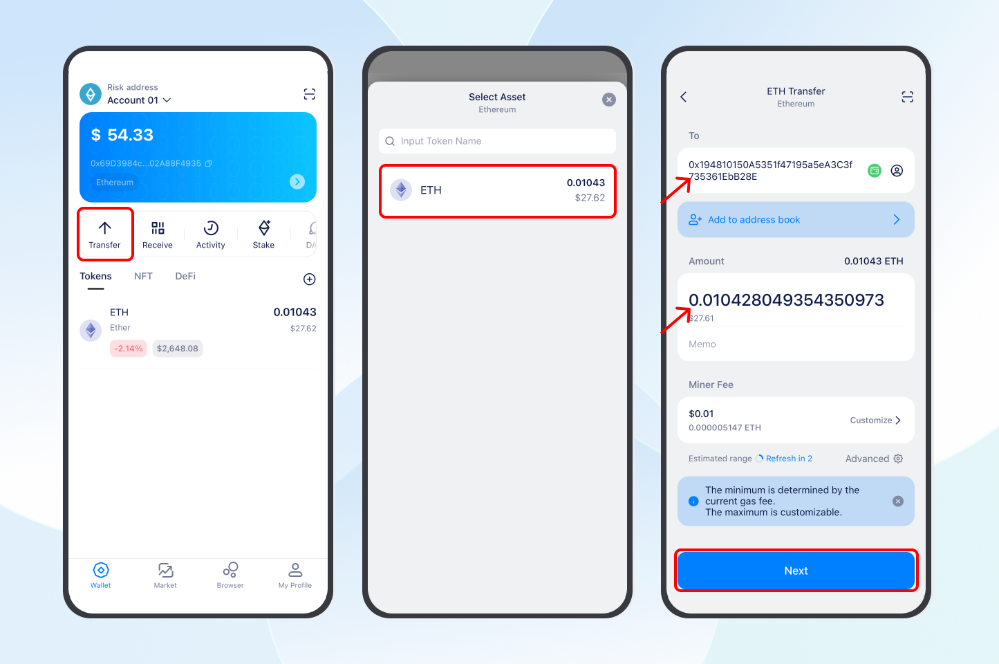
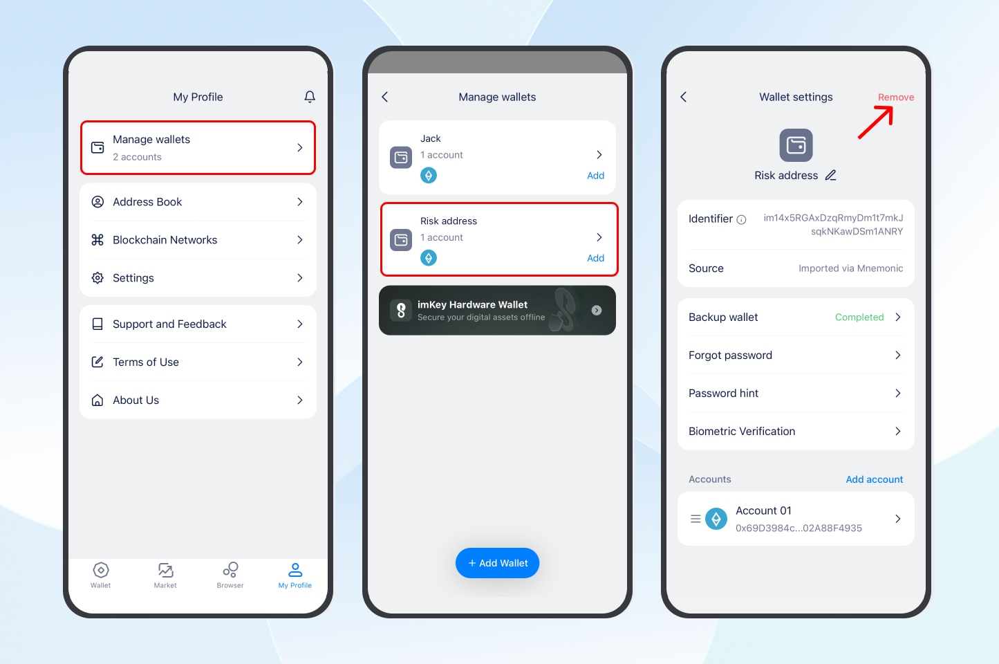

If you have downloaded and used a fake imToken app created by scammers, your tokens could be stolen at any time. Transfer them as soon as possible. If you only have one phone available, follow the steps in this guide.
Note: If you have two phones available, see “How to transfer tokens safely if you have two phones?”.
Reminder: Three common mistakes can leave your tokens at risk even after you transfer them. These are explained at the end of this article. Follow each step carefully.
1. Back up the mnemonic from the fake wallet app
Open the fake wallet app and find every wallet that holds tokens. Write down each wallet’s mnemonic (12 English words) on paper.
The usual steps are: Go to “My profile” - “Manage wallets”, select the wallet, and tap “Backup wallet”. Enter your wallet password to view and back up the mnemonic.
Note: Back up every wallet that holds tokens, including any wallets you created or imported.
2. Download imToken from the official website
Once you have backed up all at-risk wallets, uninstall the fake wallet app.
Download and reinstall imToken from its official website: https://token.im/. Learn more: How to download imToken safely?
3. Create a new wallet in the official imToken app
1. Create a new wallet: Open imToken, tap “Create new wallet”, set a wallet name, password, and password hint, then tap “Create”.
2. Add accounts to receive your tokens: Select the networks used by your at-risk wallets. For example, if you hold tokens in an ETH wallet, select Ethereum to add a new ETH account.
Note: If your at-risk wallet holds tokens on multiple networks, add an account for each network in the new wallet and transfer the assets from each one.
Learn more: What Is an Account?

3. Back up your new wallet: Follow the on-screen instructions to write down the new wallet’s mnemonic on paper and store it safely. Confirm the words in order, then tap “Next” to finish creating the wallet.
Important: Store the backups for your new wallet and at-risk wallet separately and label them clearly to avoid confusion. Your mnemonic or private key is the only way to restore your wallet. If you lose it, your tokens cannot be recovered. Keep it safe!

4. Copy the new account address: Open the ETH account you just created, tap “Receive”, then tap “Copy” to copy its address. You will use this address to receive tokens from the at-risk account.

4. Transfer your tokens to the new wallet
1. Temporarily import the at-risk wallet into imToken
- Go to “My profile” - “Manage wallets” - “+ Add wallet” - “Import existing wallets” and select “Mnemonic”.
- Enter the at-risk wallet’s mnemonic, set the wallet name (such as Risk Wallet) and password, and tap “Continue”. Then select the Ethereum network to add the ETH account.
- Return to the wallet homepage to access the at-risk ETH account you just imported from the fake wallet app.
Important: Import the at-risk wallet only to transfer its tokens to the new wallet. Remove it immediately after the transfer and stop using it.

2. Send tokens from the at-risk account
- On the account homepage, tap “Transfer” and select the token you want to transfer. Paste your new ETH account address into the “To” field.
- Enter the amount, tap “Next”, pay the network fee, and sign to complete the transfer.
Repeat these steps to transfer the other tokens from the at-risk account to the new account.
Note:
- If your ETH account holds multiple tokens, transfer the other tokens first and ETH last. You need ETH to pay network fees for the remaining transfers.
- Transfers from an ETH wallet require ETH for network fees. Transfers from a Tron wallet require TRX to cover Energy and Bandwidth consumption. These fees are collected by the corresponding network, not imToken.
- If the at-risk account does not have enough ETH or TRX, buy and transfer a small amount from an exchange, then move your tokens as soon as possible.

3. Confirm receipt and remove the at-risk wallet
Once all tokens have left the at-risk account and arrived in the new account, go to “My Profile” - “Manage wallets” and select the at-risk wallet. On its settings page, tap “Remove”.
All wallets and addresses used in the fake app are at risk. Do not import or use them again after removing them.

Need help?
If you encounter any issues during the transfer, contact us:
- Email [email protected] and include the relevant wallet addresses;
- Visit https://token.im, open “Help center” in the bottom right corner, then select “Get Help” to contact official support.
Common mistakes
Avoid these three mistakes, which can leave your tokens at risk of theft at any time!
Mistake 1: Continuing to use the at-risk account after importing It
Why: The mnemonic or private key for an address used in the fake wallet app has already been exposed. Importing it into the official imToken app does not remove the risk of theft.
Import the at-risk account only to transfer its tokens to a new account. Once the transfer is complete, remove the at-risk wallet and stop using any addresses used in the fake app.
Mistake 2: Creating a new wallet in the fake app
Why: The fake app will also expose the new wallet’s mnemonic phrase, leaving it at risk.
Uninstall the fake wallet app, download the official imToken app from the imToken website, and create a new wallet there.
Mistake 3: Downloading imToken from an unofficial source again
Why: Apps downloaded through search engines such as Baidu or Quark, links or QR codes shared by friends, or other unofficial sources are not guaranteed to be authentic. You could download another fake imToken app.
Follow these steps to download imToken:
- Open the official imToken website at https://token.im and carefully check the domain name. Click to learn how to check it.
- Once you have confirmed that you are on the official website, tap “Try imToken” and select the download option for your phone’s operating system.